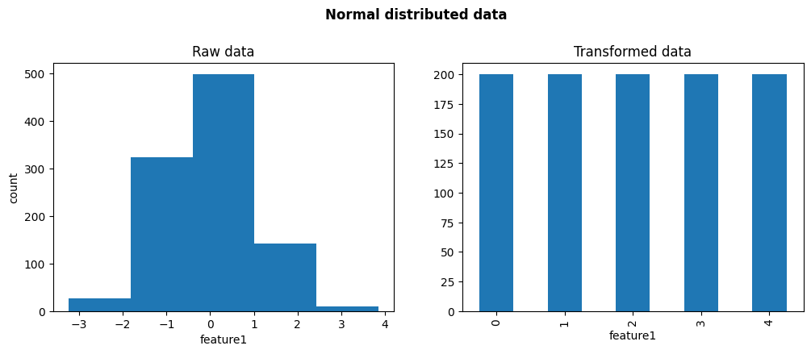
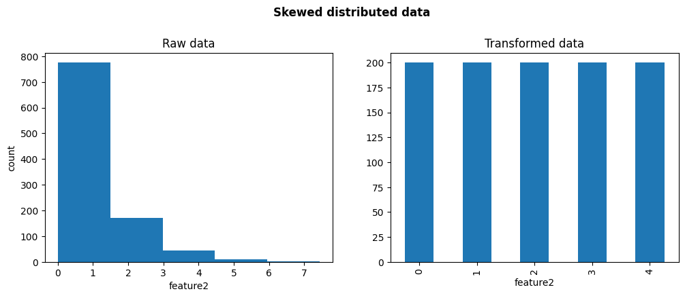

EqualFrequencyDiscretiser#
Equal frequency discretization consists of dividing continuous attributes into equal-frequency bins. These bins contain roughly the same number of observations, with boundaries set at specific quantile values determined by the desired number of bins.
Equal frequency discretization ensures a uniform distribution of data points across the range of values, enhancing the handling of skewed data and outliers.
Discretization is a common data preprocessing technique used in data science. It’s also known as binning data (or simply “binning”).
Advantages and Limitations#
Equal frequency discretization has some advantages and shortcomings:
Advantages#
Some advantages of equal frequency binning:
Algorithm Efficiency: Enhances the performance of data mining and machine learning algorithms by providing a simplified representation of the dataset.
Outlier Management: Efficiently mitigates the effect of outliers by grouping them into the extreme bins.
Data Smoothing: Helps smooth the data, reduces noise, and improves the model’s ability to generalize.
Improved value distribution: Returns an uniform distribution of values across the value range.
Equal frequency discretization improves the data distribution, optimizing the spread of values. This is particularly beneficial for datasets with skewed distributions (see the Python example code).
Limitations#
On the other hand, equal frequency binning can lead to a loss of information by aggregating data into broader categories. This is particularly concerning if the data in the same bin has predictive information about the target.
Let’s consider a binary classifier task using a decision tree model. A bin with a high proportion of both target categories would potentially impact the model’s performance in this scenario.
EqualFrequencyDiscretiser#
Feature-engine’s EqualFrequencyDiscretiser applies equal frequency discretization to numerical variables. It uses
the pandas.qcut() function under the hood, to determine the interval limits.
You can specify the variables to be discretized by passing their names in a list when you set up the transformer. Alternatively,
EqualFrequencyDiscretiser will automatically infer the data types to compute the interval limits for all numeric variables.
Optimal number of intervals: With EqualFrequencyDiscretiser, the user defines the number of bins. Smaller intervals
may be required if the variable is highly skewed or not continuous.
Integration with scikit-learn: EqualFrequencyDiscretiser and all other feature-engine transformers seamlessly integrate
with scikit-learn pipelines.
Python code example#
In this section, we’ll show the main functionality of EqualFrequencyDiscretiser
Load dataset#
In this example, we’ll use the Ames House Prices’ Dataset. First, let’s load the dataset and split it into train and test sets:
import matplotlib.pyplot as plt
from sklearn.datasets import fetch_openml
from sklearn.model_selection import train_test_split
from feature_engine.discretisation import EqualFrequencyDiscretiser
# Load dataset
X, y = fetch_openml(name='house_prices', version=1, return_X_y=True, as_frame=True)
X.set_index('Id', inplace=True)
# Separate into train and test sets
X_train, X_test, y_train, y_test = train_test_split(X, y, test_size=0.3, random_state=42)
Equal-frequency Discretization#
In this example, let’s discretize two variables, LotArea and GrLivArea, into 10 intervals of approximately equal number of observations.
# List the target numeric variables to be transformed
TARGET_NUMERIC_FEATURES= ['LotArea','GrLivArea']
# Set up the discretization transformer
disc = EqualFrequencyDiscretiser(q=10, variables=TARGET_NUMERIC_FEATURES)
# Fit the transformer
disc.fit(X_train)
Note that if we do not specify the variables (default=`None`), EqualFrequencyDiscretiser will automatically
infer the data types to compute the interval limits for all numeric variables.
With the fit() method, the discretizer learns the bin boundaries and saves them into a dictionary so we can use them
to transform unseen data:
# Learned limits for each variable
disc.binner_dict_
{'LotArea': [-inf,
5000.0,
7105.6,
8099.200000000003,
8874.0,
9600.0,
10318.400000000001,
11173.5,
12208.2,
14570.699999999999,
inf],
'GrLivArea': [-inf,
918.5,
1080.4,
1218.0,
1348.4,
1476.5,
1601.6000000000001,
1717.6999999999998,
1893.0000000000005,
2166.3999999999996,
inf]}
Note that the lower and upper boundaries are set to -inf and inf, respectively. his behavior ensures that the transformer will be able to allocate to the extreme bins values that are smaller or greater than the observed minimum and maximum values in the training set.
EqualFrequencyDiscretiser will not work in the presence of missing values. Therefore, we should either remove or
impute missing values before fitting the transformer.
# Transform the data
train_t = disc.transform(X_train)
test_t = disc.transform(X_test)
Let’s visualize the first rows of the raw data and the transformed data:
# Raw data
print(X_train[TARGET_NUMERIC_FEATURES].head())
Here we see the original variables:
LotArea GrLivArea
Id
136 10400 1682
1453 3675 1072
763 8640 1547
933 11670 1905
436 10667 1661
# Transformed data
print(train_t[TARGET_NUMERIC_FEATURES].head())
Here we observe the variables after discretization:
LotArea GrLivArea
Id
136 6 6
1453 0 1
763 3 5
933 7 8
436 6 6
The transformed data now contains discrete values corresponding to the ordered computed buckets (0 being the first and q-1 the last).
Now, let’s visualize the plots for equal-width intervals with a histogram and the transformed data with equal-frequency discretiser:
# Instantiate a figure with two axes
fig, axes = plt.subplots(ncols=2, figsize=(10,5))
# Plot raw distribution
X_train['GrLivArea'].plot.hist(bins=disc.q, ax=axes[0])
axes[0].set_title('Raw data with equal width binning')
axes[0].set_xlabel('GrLivArea')
# Plot transformed distribution
train_t['GrLivArea'].value_counts().sort_index().plot.bar(ax=axes[1])
axes[1].set_title('Transformed data with equal frequency binning')
plt.tight_layout(w_pad=2)
plt.show()
As we see in the following image, the intervals contain approximately the same number of observations:
Finally, as the default value for the return_object parameter is False, the transformer outputs integer variables:
train_t[TARGET_NUMERIC_FEATURES].dtypes
LotArea int64
GrLivArea int64
dtype: object
Return variables as object#
Categorical encoders in Feature-engine are designed to work by default with variables of type object. Therefore, to further
encode the discretised output with Feature-engine, we can set return_object=True instead. This will return the transformed
variables as object.
Let’s say we want to obtain monotonic relationships between the variable and the target. We can do that seamlessly by setting
return_object to True. A tutorial of how to use this functionality is available
here.
Return bin boundaries#
If we want to output the intervals limits instead of integers, we can set return_boundaries to True:
# Set up the discretization transformer
disc = EqualFrequencyDiscretiser(
q=10,
variables=TARGET_NUMERIC_FEATURES,
return_boundaries=True)
# Fit the transformer
disc.fit(X_train)
# Transform test set & visualize limit
test_t = disc.transform(X_test)
# Visualize output (boundaries)
print(test_t[TARGET_NUMERIC_FEATURES].head())
The transformed variables now show the interval limits in the output. We can immediately see that the bin width for these intervals varies. In other words, they don’t have the same width, contrarily to what we see with equal width discretization.
Unlike the variables discretized into integers, these variables cannot be used to train machine learning models; however, they are still highly helpful for data analysis in this format, and they may be sent to any Feature-engine encoder for additional processing.
LotArea GrLivArea
Id
893 (8099.2, 8874.0] (918.5, 1080.4]
1106 (12208.2, 14570.7] (2166.4, inf]
414 (8874.0, 9600.0] (918.5, 1080.4]
523 (-inf, 5000.0] (1601.6, 1717.7]
1037 (12208.2, 14570.7] (1601.6, 1717.7]
Binning skewed data#
Let’s now show the benefits of equal frequency discretization for skewed variables. We’ll start by importing the libraries and classes:
import numpy as np
import pandas as pd
import matplotlib.pyplot as plt
from feature_engine.discretisation import EqualFrequencyDiscretiser
Now, we’ll create a toy dataset with a variable that is normally distributed and another one that is skewed:
# Set seed for reproducibility
np.random.seed(42)
# Generate a normally distributed data
normal_data = np.random.normal(loc=0, scale=1, size=1000)
# Generate a right-skewed data using exponential distribution
skewed_data = np.random.exponential(scale=1, size=1000)
# Create dataframe with simulated data
X = pd.DataFrame({'feature1': normal_data, 'feature2': skewed_data})
Let’s discretize both variables into 5 equal frequency bins:
# Instantiate discretizer
disc = EqualFrequencyDiscretiser(q=5)
# Transform simulated data
X_transformed = disc.fit_transform(X)
Let’s plot the original distribution and the distribution after discretization for the variable that was normally distributed:
fig, axes = plt.subplots(1, 2, figsize=(12, 4))
axes[0].hist(X.feature1, bins=disc.q)
axes[0].set(xlabel='feature1', ylabel='count', title='Raw data')
X_transformed.feature1.value_counts().sort_index().plot.bar(ax=axes[1])
axes[1].set_title('Transformed data')
plt.suptitle('Normal distributed data', weight='bold', size='large', y=1.05)
plt.show()
In the following image, we see that after the discretization there is an even distribution of the values across the value range, hence, the variable does no look normally distributed any more.
Let’s now plot the original distribution and the distribution after discretization for the variable that was skewed:
fig, axes = plt.subplots(1, 2, figsize=(12, 4))
axes[0].hist(X.feature2, bins=disc.q)
axes[0].set(xlabel='feature2', ylabel='count', title='Raw data')
X_transformed.feature2.value_counts().sort_index().plot.bar(ax=axes[1])
axes[1].set_title('Transformed data')
plt.suptitle('Skewed distributed data', weight='bold', size='large', y=1.05)
plt.show()
In the following image, we see that after the discretization there is an even distribution of the values across the value range.
See Also#
For alternative binning techniques, check out the following resources:
Further feature-engine discretizers / binning methods
Scikit-learn’s KBinsDiscretizer.
Check out also:
Additional resources#
Check also for more details on how to use this transformer:
For more details about this and other feature engineering methods check out these resources:

Feature Engineering for Machine Learning#
Or read our book:

Python Feature Engineering Cookbook#
Both our book and course are suitable for beginners and more advanced data scientists alike. By purchasing them you are supporting Sole, the main developer of Feature-engine.